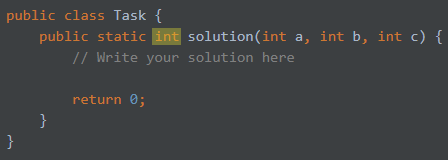

So, how do variables allow us to create more interesting programs, which don't always output the same thing? The answer is a special type of variable called parameters. Parameters are the inputs to your program. Here's what they look like:
public static int solution(int a, int b) { // a and b are parameters
int c = a + b; // Arguments can be used like any other variable
return c;
}
Like other variables, when you first create an parameter you must give it a type. However, you do not need to give it a value, because the value will be set by whatever is running your program (in this course, that is the automatic code checker). You can do math with arguments the same way you can with other variables.
Note: Like the inputs of your program, the output has a specific type. The type of value your program should return is defined right before "solution" on the second line.
For this task, write a program that takes three integers as inputs, a, b, and c, and outputs (a+b)*c.